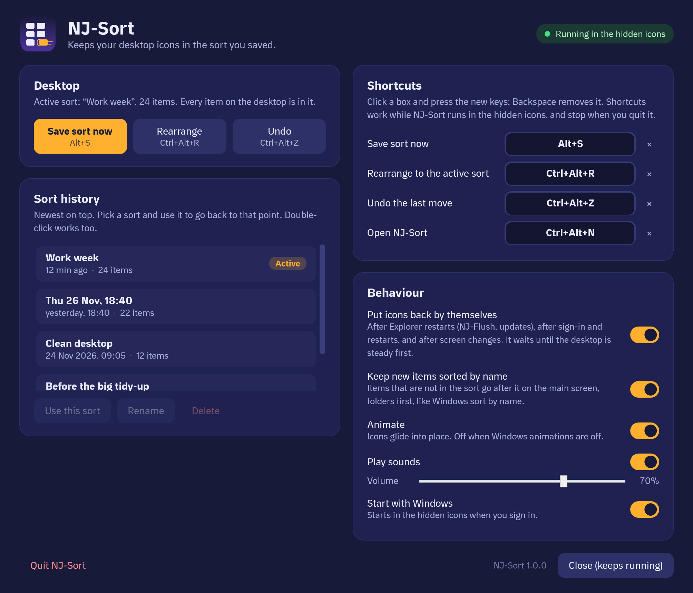

Your icons, where you put them.
Save the way your desktop is arranged. When Windows scatters it, NJ-Sort glides every icon back.
- Free
- MIT licence
- One file, about 200 KB
- Windows 10 and 11
Save once. It stays put.
Press Alt S to save. Every save goes into the history, so you can go back to any earlier arrangement. Items that aren't in the sort follow it, sorted by name, the way Windows' own Sort by name does.

What it does when Windows moves things.
When Explorer restarts, the desktop empties for a moment. NJ-Sort never mistakes that for you deleting files.
It waits until the desktop is steady, puts your sort back, and checks once more a few seconds later. That covers an update, a crash, or a tool like NJ-Flush.
Sort history
Every save is kept, newest on top. Use, rename or delete any of them. Deleted sorts go to the Recycle Bin.
New items by name
A new download lands after your sorted icons, in name order, folders first. It never covers one of yours.
Undo
Every rearrange can be undone with one key, and redone with the same key.
Glide and chime
Icons glide into place one after another, a small toast confirms what moved, and a quiet chime plays. All of it can be turned off.
Shortcuts you can change
They work while NJ-Sort sits in the hidden icons. Click a box in the window and press new keys.
Three steps. No admin rights.
Download
Get NJ-Sort.exe from the latest release. One file, no installer, about 200 KB.
Open it
It copies itself to %LOCALAPPDATA%\NJ-Sort, opens its window and waits in the hidden icons.
Save your sort
Arrange your icons and press Alt S. From then on, NJ-Sort keeps them there.
For Windows 10 or 11. The file isn't code-signed yet, so SmartScreen may ask on the first run: choose More info, then Run anyway. NJ-Sort only ever moves the desktop's own icons. If Windows' Auto arrange icons is on, NJ-Sort asks you to turn it off rather than fight it.